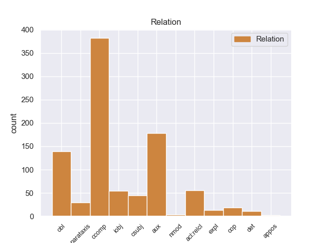
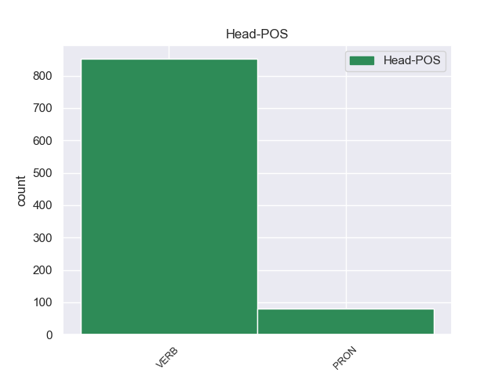
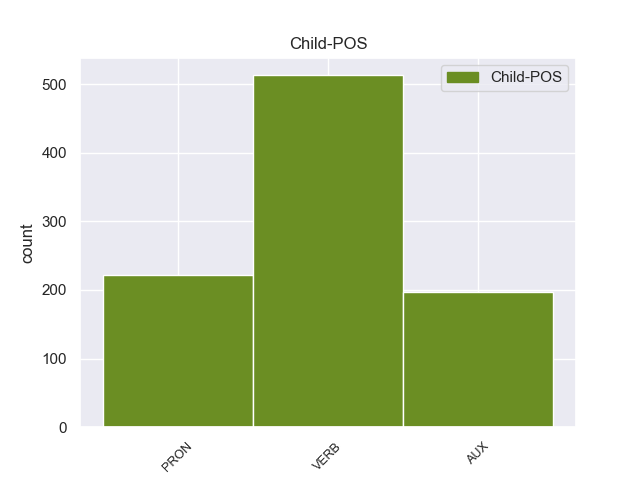

Distribution of features within this leaf



Agreement Rules sorted by frequency.
- When the dependent token is the clausal complement(ccomp) of the head token,
1 Θα _ _ _ _ 0 _ _ _
2 ήθελα θέλω VERB VERB Aspect=Imp|Mood=Ind|Number=Sing|Person=1|Tense=Past|VerbForm=Fin|Voice=Act 0 _ _ _
3 να _ _ _ _ 0 _ _ _
4 επιστήσω εφιστώ VERB VERB Aspect=Perf|Mood=Ind|Number=Sing|Person=1|VerbForm=Fin|Voice=Act 2 ccomp _ _
5 την _ _ _ _ 0 _ _ _
6 προσοχή _ _ _ _ 0 _ _ _
7 όλων _ _ _ _ 0 _ _ _
8 των _ _ _ _ 0 _ _ _
9 συναδέλφων _ _ _ _ 0 _ _ _
10 σ _ _ _ _ 0 _ _ _
11 το _ _ _ _ 0 _ _ _
12 γεγονός _ _ _ _ 0 _ _ _
13 ότι _ _ _ _ 0 _ _ _
14 , _ _ _ _ 0 _ _ _
15 εάν _ _ _ _ 0 _ _ _
16 υπάρχουν _ _ _ _ 0 _ _ _
17 κάποιες _ _ _ _ 0 _ _ _
18 ελευθερίες _ _ _ _ 0 _ _ _
19 οι _ _ _ _ 0 _ _ _
20 οποίες _ _ _ _ 0 _ _ _
21 είναι _ _ _ _ 0 _ _ _
22 ζωτικής _ _ _ _ 0 _ _ _
23 σημασίας _ _ _ _ 0 _ _ _
24 για _ _ _ _ 0 _ _ _
25 την _ _ _ _ 0 _ _ _
26 άσκηση _ _ _ _ 0 _ _ _
27 του _ _ _ _ 0 _ _ _
28 λειτουργήματος _ _ _ _ 0 _ _ _
29 της _ _ _ _ 0 _ _ _
30 δημόσιας _ _ _ _ 0 _ _ _
31 εκπροσώπησης _ _ _ _ 0 _ _ _
32 , _ _ _ _ 0 _ _ _
33 ιδίως _ _ _ _ 0 _ _ _
34 για _ _ _ _ 0 _ _ _
35 ένα _ _ _ _ 0 _ _ _
36 Κοινοβούλιο _ _ _ _ 0 _ _ _
37 σαν _ _ _ _ 0 _ _ _
38 το _ _ _ _ 0 _ _ _
39 δικό _ _ _ _ 0 _ _ _
40 μας _ _ _ _ 0 _ _ _
41 , _ _ _ _ 0 _ _ _
42 η _ _ _ _ 0 _ _ _
43 ελευθερία _ _ _ _ 0 _ _ _
44 της _ _ _ _ 0 _ _ _
45 επικοινωνίας _ _ _ _ 0 _ _ _
46 με _ _ _ _ 0 _ _ _
47 άλλους _ _ _ _ 0 _ _ _
48 πολίτες _ _ _ _ 0 _ _ _
49 και _ _ _ _ 0 _ _ _
50 με _ _ _ _ 0 _ _ _
51 τους _ _ _ _ 0 _ _ _
52 πολίτες _ _ _ _ 0 _ _ _
53 τρίτων _ _ _ _ 0 _ _ _
54 χωρών _ _ _ _ 0 _ _ _
55 , _ _ _ _ 0 _ _ _
56 καθώς _ _ _ _ 0 _ _ _
57 και _ _ _ _ 0 _ _ _
58 η _ _ _ _ 0 _ _ _
59 ελευθερία _ _ _ _ 0 _ _ _
60 μετακίνησης _ _ _ _ 0 _ _ _
61 , _ _ _ _ 0 _ _ _
62 είναι _ _ _ _ 0 _ _ _
63 κρίσιμες _ _ _ _ 0 _ _ _
64 για _ _ _ _ 0 _ _ _
65 τη _ _ _ _ 0 _ _ _
66 διεκπεραίωση _ _ _ _ 0 _ _ _
67 του _ _ _ _ 0 _ _ _
68 έργου _ _ _ _ 0 _ _ _
69 μας _ _ _ _ 0 _ _ _
70 . _ _ _ _ 0 _ _ _
1 Συνεπώς _ _ _ _ 0 _ _ _
2 , _ _ _ _ 0 _ _ _
3 η _ _ _ _ 0 _ _ _
4 παρούσα _ _ _ _ 0 _ _ _
5 αίτηση _ _ _ _ 0 _ _ _
6 άρσης _ _ _ _ 0 _ _ _
7 της _ _ _ _ 0 _ _ _
8 ασυλίας _ _ _ _ 0 _ _ _
9 δεν _ _ _ _ 0 _ _ _
10 αφορά _ _ _ _ 0 _ _ _
11 το _ _ _ _ 0 _ _ _
12 ζήτημα _ _ _ _ 0 _ _ _
13 εάν _ _ _ _ 0 _ _ _
14 οι _ _ _ _ 0 _ _ _
15 διώξεις _ _ _ _ 0 _ _ _
16 μπορούν _ _ _ _ 0 _ _ _
17 ή _ _ _ _ 0 _ _ _
18 πρέπει πρέπει AUX AUX Aspect=Imp|Mood=Ind|Number=Sing|Person=3|Tense=Pres|VerbForm=Fin|Voice=Act 20 aux _ _
19 να _ _ _ _ 0 _ _ _
20 συνεχιστούν συνεχίζω VERB VERB Aspect=Perf|Mood=Ind|Number=Plur|Person=3|VerbForm=Fin|Voice=Pass 0 _ _ _
21 με _ _ _ _ 0 _ _ _
22 βάση _ _ _ _ 0 _ _ _
23 το _ _ _ _ 0 _ _ _
24 γαλλικό _ _ _ _ 0 _ _ _
25 δίκαιο _ _ _ _ 0 _ _ _
26 . _ _ _ _ 0 _ _ _
1 Υπ' _ _ _ _ 0 _ _ _
2 αυτές _ _ _ _ 0 _ _ _
3 τις _ _ _ _ 0 _ _ _
4 συνθήκες _ _ _ _ 0 _ _ _
5 , _ _ _ _ 0 _ _ _
6 η _ _ _ _ 0 _ _ _
7 Επιτροπή _ _ _ _ 0 _ _ _
8 Νομικών _ _ _ _ 0 _ _ _
9 Θεμάτων _ _ _ _ 0 _ _ _
10 , _ _ _ _ 0 _ _ _
11 της _ _ _ _ 0 _ _ _
12 οποίας _ _ _ _ 0 _ _ _
13 τη _ _ _ _ 0 _ _ _
14 θέση _ _ _ _ 0 _ _ _
15 αποδέχομαι _ _ _ _ 0 _ _ _
16 πλήρως _ _ _ _ 0 _ _ _
17 , _ _ _ _ 0 _ _ _
18 προτείνει _ _ _ _ 0 _ _ _
19 την _ _ _ _ 0 _ _ _
20 απόρριψη _ _ _ _ 0 _ _ _
21 της _ _ _ _ 0 _ _ _
22 αίτησης _ _ _ _ 0 _ _ _
23 άρσης _ _ _ _ 0 _ _ _
24 της _ _ _ _ 0 _ _ _
25 βουλευτικής _ _ _ _ 0 _ _ _
26 ασυλίας _ _ _ _ 0 _ _ _
27 την _ _ _ _ 0 _ _ _
28 οποία _ _ _ _ 0 _ _ _
29 υπέβαλε _ _ _ _ 0 _ _ _
30 το _ _ _ _ 0 _ _ _
31 γαλλικό _ _ _ _ 0 _ _ _
32 Υπουργείο _ _ _ _ 0 _ _ _
33 Δικαιοσύνης _ _ _ _ 0 _ _ _
34 , _ _ _ _ 0 _ _ _
35 σ _ _ _ _ 0 _ _ _
36 τη _ _ _ _ 0 _ _ _
37 μορφή _ _ _ _ 0 _ _ _
38 υπό _ _ _ _ 0 _ _ _
39 την _ _ _ _ 0 _ _ _
40 οποία οποίος PRON PRON Case=Acc|Gender=Fem|Number=Sing|Person=3|PronType=Rel 41 obl _ _
41 υποβλήθηκε υποβάλλω VERB VERB Aspect=Perf|Mood=Ind|Number=Sing|Person=3|Tense=Past|VerbForm=Fin|Voice=Pass 0 _ _ _
42 σ _ _ _ _ 0 _ _ _
43 το _ _ _ _ 0 _ _ _
44 Κοινοβούλιο _ _ _ _ 0 _ _ _
45 . _ _ _ _ 0 _ _ _
1 πρόκειται _ _ _ _ 0 _ _ _
2 για _ _ _ _ 0 _ _ _
3 αυτό αυτός PRON PRON Case=Acc|Gender=Neut|Number=Sing|Person=3|PronType=Dem 0 _ _ _
4 το _ _ _ _ 0 _ _ _
5 οποίο _ _ _ _ 0 _ _ _
6 αποκαλύφθηκε αποκαλύπτω VERB VERB Aspect=Perf|Mood=Ind|Number=Sing|Person=3|Tense=Past|VerbForm=Fin|Voice=Pass 3 acl:relcl _ _
7 κατά _ _ _ _ 0 _ _ _
8 τη _ _ _ _ 0 _ _ _
9 διάρκεια _ _ _ _ 0 _ _ _
10 αυτής _ _ _ _ 0 _ _ _
11 της _ _ _ _ 0 _ _ _
12 διαδικασίας _ _ _ _ 0 _ _ _
13 , _ _ _ _ 0 _ _ _
14 ότι _ _ _ _ 0 _ _ _
15 ο _ _ _ _ 0 _ _ _
16 Εισαγγελέας _ _ _ _ 0 _ _ _
17 κάποια _ _ _ _ 0 _ _ _
18 στιγμή _ _ _ _ 0 _ _ _
19 ζήτησε _ _ _ _ 0 _ _ _
20 από _ _ _ _ 0 _ _ _
21 την _ _ _ _ 0 _ _ _
22 Πρόεδρο _ _ _ _ 0 _ _ _
23 του _ _ _ _ 0 _ _ _
24 Σώματος _ _ _ _ 0 _ _ _
25 , _ _ _ _ 0 _ _ _
26 την _ _ _ _ 0 _ _ _
27 προκάτοχό _ _ _ _ 0 _ _ _
28 σας _ _ _ _ 0 _ _ _
29 , _ _ _ _ 0 _ _ _
30 λεπτομέρειες _ _ _ _ 0 _ _ _
31 για _ _ _ _ 0 _ _ _
32 την _ _ _ _ 0 _ _ _
33 ψήφο _ _ _ _ 0 _ _ _
34 που _ _ _ _ 0 _ _ _
35 έχουν _ _ _ _ 0 _ _ _
36 δώσει _ _ _ _ 0 _ _ _
37 οι _ _ _ _ 0 _ _ _
38 δύο _ _ _ _ 0 _ _ _
39 συγκεκριμένοι _ _ _ _ 0 _ _ _
40 βουλευτές _ _ _ _ 0 _ _ _
41 προκειμένου _ _ _ _ 0 _ _ _
42 να _ _ _ _ 0 _ _ _
43 διευκρινιστεί _ _ _ _ 0 _ _ _
44 περαιτέρω _ _ _ _ 0 _ _ _
45 η _ _ _ _ 0 _ _ _
46 πιθανότητα _ _ _ _ 0 _ _ _
47 να _ _ _ _ 0 _ _ _
48 είχαν _ _ _ _ 0 _ _ _
49 ασκήσει _ _ _ _ 0 _ _ _
50 αθέμιτη _ _ _ _ 0 _ _ _
51 επιρροή _ _ _ _ 0 _ _ _
52 . _ _ _ _ 0 _ _ _
1 από _ _ _ _ 0 _ _ _
2 τα _ _ _ _ 0 _ _ _
3 δε _ _ _ _ 0 _ _ _
4 έγγραφα _ _ _ _ 0 _ _ _
5 της _ _ _ _ 0 _ _ _
6 υπόθεσης _ _ _ _ 0 _ _ _
7 προκύπτει προκύπτω VERB VERB Aspect=Imp|Mood=Ind|Number=Sing|Person=3|Tense=Pres|VerbForm=Fin|Voice=Act 0 _ _ _
8 ότι _ _ _ _ 0 _ _ _
9 δεν _ _ _ _ 0 _ _ _
10 φαίνεται φαίνομαι VERB VERB Aspect=Imp|Mood=Ind|Number=Sing|Person=3|Tense=Pres|VerbForm=Fin|Voice=Pass 7 csubj _ _
11 να _ _ _ _ 0 _ _ _
12 έχει _ _ _ _ 0 _ _ _
13 ληφθεί _ _ _ _ 0 _ _ _
14 υπόψη _ _ _ _ 0 _ _ _
15 η _ _ _ _ 0 _ _ _
16 σύσταση _ _ _ _ 0 _ _ _
17 να _ _ _ _ 0 _ _ _
18 διαβιβαστεί _ _ _ _ 0 _ _ _
19 η _ _ _ _ 0 _ _ _
20 αίτηση _ _ _ _ 0 _ _ _
21 άρσης _ _ _ _ 0 _ _ _
22 της _ _ _ _ 0 _ _ _
23 ασυλίας _ _ _ _ 0 _ _ _
24 μόνον _ _ _ _ 0 _ _ _
25 επί _ _ _ _ 0 _ _ _
26 τη _ _ _ _ 0 _ _ _
27 βάσει _ _ _ _ 0 _ _ _
28 ακριβέστερου _ _ _ _ 0 _ _ _
29 προσδιορισμού _ _ _ _ 0 _ _ _
30 όσον _ _ _ _ 0 _ _ _
31 αφορά _ _ _ _ 0 _ _ _
32 τους _ _ _ _ 0 _ _ _
33 τόπους _ _ _ _ 0 _ _ _
34 και _ _ _ _ 0 _ _ _
35 τα _ _ _ _ 0 _ _ _
36 πρόσωπα _ _ _ _ 0 _ _ _
37 που _ _ _ _ 0 _ _ _
38 εμπλέκονται _ _ _ _ 0 _ _ _
39 σ _ _ _ _ 0 _ _ _
40 την _ _ _ _ 0 _ _ _
41 υπόθεση _ _ _ _ 0 _ _ _
42 . _ _ _ _ 0 _ _ _
1 Με _ _ _ _ 0 _ _ _
2 αυτές _ _ _ _ 0 _ _ _
3 τις _ _ _ _ 0 _ _ _
4 κατηγορίες _ _ _ _ 0 _ _ _
5 , _ _ _ _ 0 _ _ _
6 από _ _ _ _ 0 _ _ _
7 τις _ _ _ _ 0 _ _ _
8 οποίες _ _ _ _ 0 _ _ _
9 η _ _ _ _ 0 _ _ _
10 πρώτη _ _ _ _ 0 _ _ _
11 αφορά _ _ _ _ 0 _ _ _
12 λαθρεμπόριο _ _ _ _ 0 _ _ _
13 όπλων _ _ _ _ 0 _ _ _
14 κλπ. _ _ _ _ 0 _ _ _
15 , _ _ _ _ 0 _ _ _
16 και _ _ _ _ 0 _ _ _
17 βαρύνει _ _ _ _ 0 _ _ _
18 τόσο _ _ _ _ 0 _ _ _
19 τον _ _ _ _ 0 _ _ _
20 κ. _ _ _ _ 0 _ _ _
21 Pasqua _ _ _ _ 0 _ _ _
22 όσο _ _ _ _ 0 _ _ _
23 και _ _ _ _ 0 _ _ _
24 τον _ _ _ _ 0 _ _ _
25 κ. _ _ _ _ 0 _ _ _
26 Marchiani _ _ _ _ 0 _ _ _
27 , _ _ _ _ 0 _ _ _
28 ενώ _ _ _ _ 0 _ _ _
29 η _ _ _ _ 0 _ _ _
30 δεύτερη _ _ _ _ 0 _ _ _
31 στρέφεται _ _ _ _ 0 _ _ _
32 μόνον _ _ _ _ 0 _ _ _
33 εναντίον _ _ _ _ 0 _ _ _
34 του _ _ _ _ 0 _ _ _
35 κ. _ _ _ _ 0 _ _ _
36 Pasqua _ _ _ _ 0 _ _ _
37 , _ _ _ _ 0 _ _ _
38 οι _ _ _ _ 0 _ _ _
39 ανακριτές _ _ _ _ 0 _ _ _
40 δικαστές _ _ _ _ 0 _ _ _
41 ζητούν _ _ _ _ 0 _ _ _
42 την _ _ _ _ 0 _ _ _
43 άρση _ _ _ _ 0 _ _ _
44 της _ _ _ _ 0 _ _ _
45 βουλευτικής _ _ _ _ 0 _ _ _
46 ασυλίας _ _ _ _ 0 _ _ _
47 των _ _ _ _ 0 _ _ _
48 εν _ _ _ _ 0 _ _ _
49 λόγω _ _ _ _ 0 _ _ _
50 δύο _ _ _ _ 0 _ _ _
51 κυρίων _ _ _ _ 0 _ _ _
52 , _ _ _ _ 0 _ _ _
53 προκειμένου _ _ _ _ 0 _ _ _
54 να _ _ _ _ 0 _ _ _
55 τους _ _ _ _ 0 _ _ _
56 επιβληθούν _ _ _ _ 0 _ _ _
57 ορισμένα _ _ _ _ 0 _ _ _
58 μέτρα _ _ _ _ 0 _ _ _
59 δικαστικής _ _ _ _ 0 _ _ _
60 επιτήρησης _ _ _ _ 0 _ _ _
61 : _ _ _ _ 0 _ _ _
62 να _ _ _ _ 0 _ _ _
63 τους _ _ _ _ 0 _ _ _
64 απαγορευθεί _ _ _ _ 0 _ _ _
65 η _ _ _ _ 0 _ _ _
66 επαφή _ _ _ _ 0 _ _ _
67 με _ _ _ _ 0 _ _ _
68 διάφορους _ _ _ _ 0 _ _ _
69 μάρτυρες _ _ _ _ 0 _ _ _
70 ή _ _ _ _ 0 _ _ _
71 συγκατηγορουμένους _ _ _ _ 0 _ _ _
72 σ _ _ _ _ 0 _ _ _
73 τις _ _ _ _ 0 _ _ _
74 υποθέσεις _ _ _ _ 0 _ _ _
75 αυτές _ _ _ _ 0 _ _ _
76 και _ _ _ _ 0 _ _ _
77 η _ _ _ _ 0 _ _ _
78 μετάβαση _ _ _ _ 0 _ _ _
79 σε _ _ _ _ 0 _ _ _
80 διάφορες _ _ _ _ 0 _ _ _
81 χώρες _ _ _ _ 0 _ _ _
82 , _ _ _ _ 0 _ _ _
83 καθώς _ _ _ _ 0 _ _ _
84 και _ _ _ _ 0 _ _ _
85 να _ _ _ _ 0 _ _ _
86 τους εγώ PRON PRON Case=Gen|Gender=Masc|Number=Plur|Person=3|PronType=Prs 87 iobj _ _
87 επιβληθεί επιβάλλω VERB VERB Aspect=Perf|Mood=Ind|Number=Sing|Person=3|VerbForm=Fin|Voice=Pass 0 _ _ _
88 ενδεχομένως _ _ _ _ 0 _ _ _
89 η _ _ _ _ 0 _ _ _
90 καταβολή _ _ _ _ 0 _ _ _
91 εγγύησης _ _ _ _ 0 _ _ _
92 . _ _ _ _ 0 _ _ _
1 Αυτή αυτός PRON PRON Case=Nom|Gender=Fem|Number=Sing|Person=3|PronType=Dem 0 _ _ _
2 είναι είμαι AUX AUX Aspect=Imp|Mood=Ind|Number=Sing|Person=3|Tense=Pres|VerbForm=Fin|Voice=Pass 1 cop _ _
3 η _ _ _ _ 0 _ _ _
4 κατάσταση _ _ _ _ 0 _ _ _
5 επί _ _ _ _ 0 _ _ _
6 της _ _ _ _ 0 _ _ _
7 οποίας _ _ _ _ 0 _ _ _
8 πρέπει _ _ _ _ 0 _ _ _
9 να _ _ _ _ 0 _ _ _
10 αποφασίσουμε _ _ _ _ 0 _ _ _
11 . _ _ _ _ 0 _ _ _
1 Η _ _ _ _ 0 _ _ _
2 Αστυνομία _ _ _ _ 0 _ _ _
3 απέκλεισε αποκλείω VERB VERB Aspect=Perf|Mood=Ind|Number=Sing|Person=3|Tense=Past|VerbForm=Fin|Voice=Act 0 _ _ _
4 την _ _ _ _ 0 _ _ _
5 πόλη _ _ _ _ 0 _ _ _
6 με _ _ _ _ 0 _ _ _
7 σκοπό _ _ _ _ 0 _ _ _
8 να _ _ _ _ 0 _ _ _
9 βρεί _ _ _ _ 0 _ _ _
10 τους _ _ _ _ 0 _ _ _
11 κρατούμενους _ _ _ _ 0 _ _ _
12 και _ _ _ _ 0 _ _ _
13 να _ _ _ _ 0 _ _ _
14 τους _ _ _ _ 0 _ _ _
15 ξαναβάλει _ _ _ _ 0 _ _ _
16 σ _ _ _ _ 0 _ _ _
17 τη _ _ _ _ 0 _ _ _
18 φυλακή _ _ _ _ 0 _ _ _
19 » _ _ _ _ 0 _ _ _
20 , _ _ _ _ 0 _ _ _
21 δήλωσε δηλώνω VERB VERB Aspect=Perf|Mood=Ind|Number=Sing|Person=3|Tense=Past|VerbForm=Fin|Voice=Act 3 parataxis _ _
22 εκπρόσωπος _ _ _ _ 0 _ _ _
23 των _ _ _ _ 0 _ _ _
24 τοπικών _ _ _ _ 0 _ _ _
25 αρχών _ _ _ _ 0 _ _ _
26 . _ _ _ _ 0 _ _ _
1 Ωστόσο _ _ _ _ 0 _ _ _
2 , _ _ _ _ 0 _ _ _
3 κάτι κάτι PRON PRON Case=Nom|Gender=Neut|Number=Sing|Person=3|PronType=Ind 0 _ _ _
4 τέτοιο τέτοιος PRON PRON Case=Nom|Gender=Neut|Number=Sing|Person=3|PronType=Dem 3 det _ _
5 απαιτεί _ _ _ _ 0 _ _ _
6 ξεκάθαρες _ _ _ _ 0 _ _ _
7 ενδείξεις _ _ _ _ 0 _ _ _
8 από _ _ _ _ 0 _ _ _
9 πλευράς _ _ _ _ 0 _ _ _
10 Βόρειας _ _ _ _ 0 _ _ _
11 Κορέας _ _ _ _ 0 _ _ _
12 , _ _ _ _ 0 _ _ _
13 που _ _ _ _ 0 _ _ _
14 μέχρι _ _ _ _ 0 _ _ _
15 τώρα _ _ _ _ 0 _ _ _
16 δεν _ _ _ _ 0 _ _ _
17 έχουν _ _ _ _ 0 _ _ _
18 εμφανιστεί _ _ _ _ 0 _ _ _
19 . _ _ _ _ 0 _ _ _
1 Οι _ _ _ _ 0 _ _ _
2 Τούρκοι _ _ _ _ 0 _ _ _
3 πρότειναν _ _ _ _ 0 _ _ _
4 να _ _ _ _ 0 _ _ _
5 γίνει _ _ _ _ 0 _ _ _
6 ανταλλαγή _ _ _ _ 0 _ _ _
7 της _ _ _ _ 0 _ _ _
8 Κρήτης _ _ _ _ 0 _ _ _
9 με _ _ _ _ 0 _ _ _
10 τη _ _ _ _ 0 _ _ _
11 Θεσσαλία _ _ _ _ 0 _ _ _
12 που _ _ _ _ 0 _ _ _
13 την εγώ PRON PRON Case=Acc|Gender=Fem|Number=Sing|Person=3|PronType=Prs 14 expl _ _
14 κατείχε κατέχω VERB VERB Aspect=Imp|Mood=Ind|Number=Sing|Person=3|Tense=Past|VerbForm=Fin|Voice=Act 0 _ _ _
15 ο _ _ _ _ 0 _ _ _
16 στρατός _ _ _ _ 0 _ _ _
17 τους _ _ _ _ 0 _ _ _
18 . _ _ _ _ 0 _ _ _
1 πρόκειται _ _ _ _ 0 _ _ _
2 για _ _ _ _ 0 _ _ _
3 αυτό αυτός PRON PRON Case=Acc|Gender=Neut|Number=Sing|Person=3|PronType=Dem 0 _ _ _
4 το _ _ _ _ 0 _ _ _
5 οποίο _ _ _ _ 0 _ _ _
6 αποκαλύφθηκε _ _ _ _ 0 _ _ _
7 κατά _ _ _ _ 0 _ _ _
8 τη _ _ _ _ 0 _ _ _
9 διάρκεια _ _ _ _ 0 _ _ _
10 αυτής _ _ _ _ 0 _ _ _
11 της _ _ _ _ 0 _ _ _
12 διαδικασίας _ _ _ _ 0 _ _ _
13 , _ _ _ _ 0 _ _ _
14 ότι _ _ _ _ 0 _ _ _
15 ο _ _ _ _ 0 _ _ _
16 Εισαγγελέας _ _ _ _ 0 _ _ _
17 κάποια _ _ _ _ 0 _ _ _
18 στιγμή _ _ _ _ 0 _ _ _
19 ζήτησε ζητώ VERB VERB Aspect=Perf|Mood=Ind|Number=Sing|Person=3|Tense=Past|VerbForm=Fin|Voice=Act 3 appos _ _
20 από _ _ _ _ 0 _ _ _
21 την _ _ _ _ 0 _ _ _
22 Πρόεδρο _ _ _ _ 0 _ _ _
23 του _ _ _ _ 0 _ _ _
24 Σώματος _ _ _ _ 0 _ _ _
25 , _ _ _ _ 0 _ _ _
26 την _ _ _ _ 0 _ _ _
27 προκάτοχό _ _ _ _ 0 _ _ _
28 σας _ _ _ _ 0 _ _ _
29 , _ _ _ _ 0 _ _ _
30 λεπτομέρειες _ _ _ _ 0 _ _ _
31 για _ _ _ _ 0 _ _ _
32 την _ _ _ _ 0 _ _ _
33 ψήφο _ _ _ _ 0 _ _ _
34 που _ _ _ _ 0 _ _ _
35 έχουν _ _ _ _ 0 _ _ _
36 δώσει _ _ _ _ 0 _ _ _
37 οι _ _ _ _ 0 _ _ _
38 δύο _ _ _ _ 0 _ _ _
39 συγκεκριμένοι _ _ _ _ 0 _ _ _
40 βουλευτές _ _ _ _ 0 _ _ _
41 προκειμένου _ _ _ _ 0 _ _ _
42 να _ _ _ _ 0 _ _ _
43 διευκρινιστεί _ _ _ _ 0 _ _ _
44 περαιτέρω _ _ _ _ 0 _ _ _
45 η _ _ _ _ 0 _ _ _
46 πιθανότητα _ _ _ _ 0 _ _ _
47 να _ _ _ _ 0 _ _ _
48 είχαν _ _ _ _ 0 _ _ _
49 ασκήσει _ _ _ _ 0 _ _ _
50 αθέμιτη _ _ _ _ 0 _ _ _
51 επιρροή _ _ _ _ 0 _ _ _
52 . _ _ _ _ 0 _ _ _
Disagree Examples:
1 Η _ _ _ _ 0 _ _ _
2 άλλη _ _ _ _ 0 _ _ _
3 διεθνής _ _ _ _ 0 _ _ _
4 σύμβαση _ _ _ _ 0 _ _ _
5 - _ _ _ _ 0 _ _ _
6 η _ _ _ _ 0 _ _ _
7 Σύμβαση _ _ _ _ 0 _ _ _
8 του _ _ _ _ 0 _ _ _
9 1970 _ _ _ _ 0 _ _ _
10 - _ _ _ _ 0 _ _ _
11 περιλαμβάνει _ _ _ _ 0 _ _ _
12 13 _ _ _ _ 0 _ _ _
13 αιτίες _ _ _ _ 0 _ _ _
14 για _ _ _ _ 0 _ _ _
15 τις _ _ _ _ 0 _ _ _
16 οποίες _ _ _ _ 0 _ _ _
17 μια _ _ _ _ 0 _ _ _
18 αίτηση _ _ _ _ 0 _ _ _
19 μπορεί _ _ _ _ 0 _ _ _
20 να _ _ _ _ 0 _ _ _
21 απορριφθεί _ _ _ _ 0 _ _ _
22 , _ _ _ _ 0 _ _ _
23 κι _ _ _ _ 0 _ _ _
24 έτσι _ _ _ _ 0 _ _ _
25 μπορούμε _ _ _ _ 0 _ _ _
26 να _ _ _ _ 0 _ _ _
27 καταλάβουμε καταλαβαίνω VERB VERB Aspect=Perf|Mood=Ind|Number=Plur|Person=1|VerbForm=Fin|Voice=Act 0 _ _ _
28 γιατί _ _ _ _ 0 _ _ _
29 το _ _ _ _ 0 _ _ _
30 σύστημα _ _ _ _ 0 _ _ _
31 δεν _ _ _ _ 0 _ _ _
32 λειτουργεί λειτουργώ VERB VERB Aspect=Imp|Mood=Ind|Number=Sing|Person=3|Tense=Pres|VerbForm=Fin|Voice=Act 27 ccomp _ _
33 αυτή _ _ _ _ 0 _ _ _
34 τη _ _ _ _ 0 _ _ _
35 στιγμή _ _ _ _ 0 _ _ _
36 . _ _ _ _ 0 _ _ _
1 Η _ _ _ _ 0 _ _ _
2 Ομάδα _ _ _ _ 0 _ _ _
3 μου _ _ _ _ 0 _ _ _
4 συμφωνεί _ _ _ _ 0 _ _ _
5 ασφαλώς _ _ _ _ 0 _ _ _
6 με _ _ _ _ 0 _ _ _
7 την _ _ _ _ 0 _ _ _
8 άποψη _ _ _ _ 0 _ _ _
9 της _ _ _ _ 0 _ _ _
10 κ. _ _ _ _ 0 _ _ _
11 Cerdeira _ _ _ _ 0 _ _ _
12 Morterero _ _ _ _ 0 _ _ _
13 ότι _ _ _ _ 0 _ _ _
14 θα _ _ _ _ 0 _ _ _
15 πρέπει πρέπει AUX AUX Aspect=Imp|Mood=Ind|Number=Sing|Person=3|Tense=Pres|VerbForm=Fin|Voice=Act 17 aux _ _
16 να _ _ _ _ 0 _ _ _
17 χρησιμοποιήσουμε χρησιμοποιώ VERB VERB Aspect=Perf|Mood=Ind|Number=Plur|Person=1|VerbForm=Fin|Voice=Act 0 _ _ _
18 το _ _ _ _ 0 _ _ _
19 υπάρχον _ _ _ _ 0 _ _ _
20 σύστημα _ _ _ _ 0 _ _ _
21 σημείων _ _ _ _ 0 _ _ _
22 επαφής _ _ _ _ 0 _ _ _
23 σ _ _ _ _ 0 _ _ _
24 το _ _ _ _ 0 _ _ _
25 Ευρωπαϊκό _ _ _ _ 0 _ _ _
26 Δικαστικό _ _ _ _ 0 _ _ _
27 Δίκτυο _ _ _ _ 0 _ _ _
28 , _ _ _ _ 0 _ _ _
29 καθώς _ _ _ _ 0 _ _ _
30 είναι _ _ _ _ 0 _ _ _
31 άσκοπο _ _ _ _ 0 _ _ _
32 να _ _ _ _ 0 _ _ _
33 ορίζουμε _ _ _ _ 0 _ _ _
34 συνεχώς _ _ _ _ 0 _ _ _
35 διαφορετικά _ _ _ _ 0 _ _ _
36 συστήματα _ _ _ _ 0 _ _ _
37 σημείων _ _ _ _ 0 _ _ _
38 επαφής _ _ _ _ 0 _ _ _
39 για _ _ _ _ 0 _ _ _
40 ποικίλες _ _ _ _ 0 _ _ _
41 πρωτοβουλίες _ _ _ _ 0 _ _ _
42 . _ _ _ _ 0 _ _ _
1 Η _ _ _ _ 0 _ _ _
2 Ομάδα _ _ _ _ 0 _ _ _
3 μου _ _ _ _ 0 _ _ _
4 συμφωνεί συμφωνώ VERB VERB Aspect=Imp|Mood=Ind|Number=Sing|Person=3|Tense=Pres|VerbForm=Fin|Voice=Act 0 _ _ _
5 ασφαλώς _ _ _ _ 0 _ _ _
6 με _ _ _ _ 0 _ _ _
7 την _ _ _ _ 0 _ _ _
8 άποψη _ _ _ _ 0 _ _ _
9 της _ _ _ _ 0 _ _ _
10 κ. _ _ _ _ 0 _ _ _
11 Cerdeira _ _ _ _ 0 _ _ _
12 Morterero _ _ _ _ 0 _ _ _
13 ότι _ _ _ _ 0 _ _ _
14 θα _ _ _ _ 0 _ _ _
15 πρέπει _ _ _ _ 0 _ _ _
16 να _ _ _ _ 0 _ _ _
17 χρησιμοποιήσουμε χρησιμοποιώ VERB VERB Aspect=Perf|Mood=Ind|Number=Plur|Person=1|VerbForm=Fin|Voice=Act 4 ccomp _ _
18 το _ _ _ _ 0 _ _ _
19 υπάρχον _ _ _ _ 0 _ _ _
20 σύστημα _ _ _ _ 0 _ _ _
21 σημείων _ _ _ _ 0 _ _ _
22 επαφής _ _ _ _ 0 _ _ _
23 σ _ _ _ _ 0 _ _ _
24 το _ _ _ _ 0 _ _ _
25 Ευρωπαϊκό _ _ _ _ 0 _ _ _
26 Δικαστικό _ _ _ _ 0 _ _ _
27 Δίκτυο _ _ _ _ 0 _ _ _
28 , _ _ _ _ 0 _ _ _
29 καθώς _ _ _ _ 0 _ _ _
30 είναι _ _ _ _ 0 _ _ _
31 άσκοπο _ _ _ _ 0 _ _ _
32 να _ _ _ _ 0 _ _ _
33 ορίζουμε _ _ _ _ 0 _ _ _
34 συνεχώς _ _ _ _ 0 _ _ _
35 διαφορετικά _ _ _ _ 0 _ _ _
36 συστήματα _ _ _ _ 0 _ _ _
37 σημείων _ _ _ _ 0 _ _ _
38 επαφής _ _ _ _ 0 _ _ _
39 για _ _ _ _ 0 _ _ _
40 ποικίλες _ _ _ _ 0 _ _ _
41 πρωτοβουλίες _ _ _ _ 0 _ _ _
42 . _ _ _ _ 0 _ _ _
1 οι _ _ _ _ 0 _ _ _
2 άνθρωποι _ _ _ _ 0 _ _ _
3 που _ _ _ _ 0 _ _ _
4 ενδιαφέρονται ενδιαφέρω VERB VERB Aspect=Imp|Mood=Ind|Number=Plur|Person=3|Tense=Pres|VerbForm=Fin|Voice=Pass 0 _ _ _
5 για _ _ _ _ 0 _ _ _
6 τις _ _ _ _ 0 _ _ _
7 ατομικές _ _ _ _ 0 _ _ _
8 ελευθερίες _ _ _ _ 0 _ _ _
9 - _ _ _ _ 0 _ _ _
10 και _ _ _ _ 0 _ _ _
11 εντάσσω εντάσσω VERB VERB Aspect=Imp|Mood=Ind|Number=Sing|Person=1|Tense=Pres|VerbForm=Fin|Voice=Act 4 parataxis _ _
12 και _ _ _ _ 0 _ _ _
13 τον _ _ _ _ 0 _ _ _
14 εαυτό _ _ _ _ 0 _ _ _
15 μου _ _ _ _ 0 _ _ _
16 σε _ _ _ _ 0 _ _ _
17 αυτούς _ _ _ _ 0 _ _ _
18 - _ _ _ _ 0 _ _ _
19 αναγκάστηκαν _ _ _ _ 0 _ _ _
20 να _ _ _ _ 0 _ _ _
21 συμφωνήσουν _ _ _ _ 0 _ _ _
22 σ _ _ _ _ 0 _ _ _
23 τα _ _ _ _ 0 _ _ _
24 μέτρα _ _ _ _ 0 _ _ _
25 της _ _ _ _ 0 _ _ _
26 αμοιβαίας _ _ _ _ 0 _ _ _
27 αναγνώρισης _ _ _ _ 0 _ _ _
28 , _ _ _ _ 0 _ _ _
29 χωρίς _ _ _ _ 0 _ _ _
30 να _ _ _ _ 0 _ _ _
31 έχουν _ _ _ _ 0 _ _ _
32 σ _ _ _ _ 0 _ _ _
33 τη _ _ _ _ 0 _ _ _
34 διάθεσή _ _ _ _ 0 _ _ _
35 τους _ _ _ _ 0 _ _ _
36 ένα _ _ _ _ 0 _ _ _
37 πλήρες _ _ _ _ 0 _ _ _
38 πρόγραμμα _ _ _ _ 0 _ _ _
39 που _ _ _ _ 0 _ _ _
40 θα _ _ _ _ 0 _ _ _
41 διασφάλιζε _ _ _ _ 0 _ _ _
42 ενδεχομένως _ _ _ _ 0 _ _ _
43 ακόμα _ _ _ _ 0 _ _ _
44 περισσότερο _ _ _ _ 0 _ _ _
45 την _ _ _ _ 0 _ _ _
46 τήρηση _ _ _ _ 0 _ _ _
47 των _ _ _ _ 0 _ _ _
48 ατομικών _ _ _ _ 0 _ _ _
49 δικαιωμάτων _ _ _ _ 0 _ _ _
50 . _ _ _ _ 0 _ _ _
1 οι _ _ _ _ 0 _ _ _
2 άνθρωποι _ _ _ _ 0 _ _ _
3 που _ _ _ _ 0 _ _ _
4 ενδιαφέρονται _ _ _ _ 0 _ _ _
5 για _ _ _ _ 0 _ _ _
6 τις _ _ _ _ 0 _ _ _
7 ατομικές _ _ _ _ 0 _ _ _
8 ελευθερίες _ _ _ _ 0 _ _ _
9 - _ _ _ _ 0 _ _ _
10 και _ _ _ _ 0 _ _ _
11 εντάσσω εντάσσω VERB VERB Aspect=Imp|Mood=Ind|Number=Sing|Person=1|Tense=Pres|VerbForm=Fin|Voice=Act 0 _ _ _
12 και _ _ _ _ 0 _ _ _
13 τον _ _ _ _ 0 _ _ _
14 εαυτό _ _ _ _ 0 _ _ _
15 μου _ _ _ _ 0 _ _ _
16 σε _ _ _ _ 0 _ _ _
17 αυτούς αυτός PRON PRON Case=Acc|Gender=Masc|Number=Plur|Person=3|PronType=Dem 11 obl _ _
18 - _ _ _ _ 0 _ _ _
19 αναγκάστηκαν _ _ _ _ 0 _ _ _
20 να _ _ _ _ 0 _ _ _
21 συμφωνήσουν _ _ _ _ 0 _ _ _
22 σ _ _ _ _ 0 _ _ _
23 τα _ _ _ _ 0 _ _ _
24 μέτρα _ _ _ _ 0 _ _ _
25 της _ _ _ _ 0 _ _ _
26 αμοιβαίας _ _ _ _ 0 _ _ _
27 αναγνώρισης _ _ _ _ 0 _ _ _
28 , _ _ _ _ 0 _ _ _
29 χωρίς _ _ _ _ 0 _ _ _
30 να _ _ _ _ 0 _ _ _
31 έχουν _ _ _ _ 0 _ _ _
32 σ _ _ _ _ 0 _ _ _
33 τη _ _ _ _ 0 _ _ _
34 διάθεσή _ _ _ _ 0 _ _ _
35 τους _ _ _ _ 0 _ _ _
36 ένα _ _ _ _ 0 _ _ _
37 πλήρες _ _ _ _ 0 _ _ _
38 πρόγραμμα _ _ _ _ 0 _ _ _
39 που _ _ _ _ 0 _ _ _
40 θα _ _ _ _ 0 _ _ _
41 διασφάλιζε _ _ _ _ 0 _ _ _
42 ενδεχομένως _ _ _ _ 0 _ _ _
43 ακόμα _ _ _ _ 0 _ _ _
44 περισσότερο _ _ _ _ 0 _ _ _
45 την _ _ _ _ 0 _ _ _
46 τήρηση _ _ _ _ 0 _ _ _
47 των _ _ _ _ 0 _ _ _
48 ατομικών _ _ _ _ 0 _ _ _
49 δικαιωμάτων _ _ _ _ 0 _ _ _
50 . _ _ _ _ 0 _ _ _